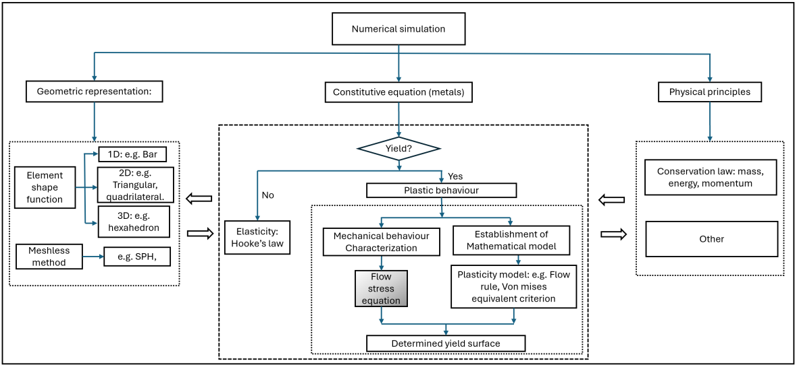
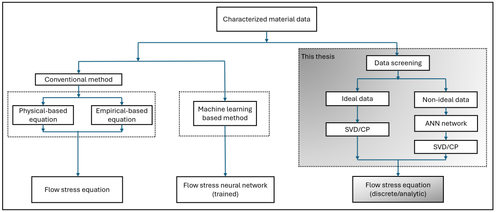

A short primer on what the field is about, longer explanations of the methods behind the research, and definitions of the terminology used across this site.
Two diagrams that place the work in context, for readers coming from outside impact mechanics. Both are taken from the PhD thesis behind the constitutive modeling stream.

Any simulation of a metal structure under impact rests on three things: a geometric representation of the part, the physical conservation laws, and a constitutive equation describing how the material itself responds. The first two are mature and largely settled. The third is not.
Inside the constitutive branch, the shaded box is the flow stress equation, which sets the stress at which the metal yields and keeps deforming as a function of strain, strain rate, and temperature. In practice it is the largest single error source in an otherwise well-posed impact simulation. That is the reason this equation, rather than the solver or the mesh, is the subject of the constitutive modeling work on this site.

The conventional route on the left picks a fixed formula in advance, the Johnson-Cook model being the usual choice, and fits its constants to the measurements. It is fast and every solver accepts it, but the form of the equation is decided before the data is looked at, so whatever the material does that the formula cannot express is lost.
The machine learning route in the middle drops the fixed form and trains a network directly on the data. It fits well inside the tested range and gives little confidence outside it, which is exactly where impact problems live.
The third route keeps the discrete data as the primary object. Measurements are first screened for validity, then SVD or CP decomposition is used to separate the underlying structure from the noise, and an artificial neural network handles the non-ideal data whose strain rate was never really constant. This is the line of work that became TEDI-FS, described on the constitutive modeling page.
Source: Xianglin Huang, Determination of dynamic flow stress equation based on discrete material data, PhD thesis, Department of Mechanical and Aerospace Engineering, The University of Manchester, 2024. Supervisor: Prof. Q.M. Li.
Self-contained write-ups of the mathematics behind specific methods, written to be readable on their own rather than as supplements to a particular paper.
Terms that appear throughout this site, defined in a sentence or two. Highlighted terms in the page text link directly to the corresponding entry here.
The stress a metal sustains while it is plastically deforming, as a function of the accumulated plastic strain, the strain rate, and the temperature. It is the single material input that governs how a finite element solver such as ABAQUS or LS-DYNA predicts a crash, impact, or perforation event, so the accuracy of the flow stress description places a ceiling on the accuracy of the whole simulation.
Determining it is difficult because the three variables cannot be controlled independently in a single experiment: a high strain rate test heats the specimen through plastic work, so strain rate and temperature effects arrive coupled and have to be separated afterwards.
The standard laboratory technique for measuring material response at strain rates of roughly 102 to 104 s-1. A short specimen is sandwiched between two long elastic bars; a striker generates a compressive stress wave in the incident bar, and the strains recorded on the two bars are used to reconstruct the stress, strain, and strain rate history of the specimen.
Its accuracy depends on assumptions that are only approximately met: stress uniformity across the specimen, one-dimensional wave propagation, and negligible friction and inertia. These are the reasons a raw SHPB curve cannot simply be fitted, and why data screening comes before any model identification.
A cylindrical specimen is fired against a Hopkinson bar acting as the anvil, so that the deformed final shape of the specimen and the force history recorded by the bar are both available from the same experiment. It reaches strain rates above what a conventional SHPB can reach, but the deformation field is strongly non-uniform, so the flow stress is recovered by inverse identification: a finite element model of the test is run repeatedly until its predictions match the measurements.
Strain rate is how fast deformation accumulates, in units of s-1. Different experimental techniques cover different bands: conventional testing machines reach about 10-4 to 100 s-1, servo-hydraulic machines the intermediate range, the Hopkinson bar roughly 102 to 104 s-1, and plate impact or laser-driven experiments beyond that.
Metals typically show a marked upturn in strength somewhere above about 103 s-1. Because no single technique spans the full spectrum, the behaviour in the very-high-rate band has to be extrapolated from lower-rate data, and doing that extrapolation defensibly is a central problem of the constitutive modeling stream.
The ratio of the dynamic strength at a given strain rate to the quasi-static strength of the same material. It is a compact way of reporting strain rate sensitivity, and it is the quantity most often plotted when comparing materials, but it is defined against a reference condition that is not always stated consistently in the literature, which makes cross-study comparison less straightforward than it appears.
The most widely used empirical flow stress equation in impact engineering, built into essentially every explicit finite element solver. It assumes the effects of strain hardening, strain rate, and thermal softening multiply together, each with its own small set of fitted constants.
Its convenience is also its limitation: the multiplicative separability is an assumption, not a measurement, and it is exactly this assumption that a data-driven treatment can test rather than presume.
The framework developed in the constitutive modeling stream. Discrete experimental flow stress data over strain, strain rate, and temperature is arranged as an order-3 tensor and decomposed into non-negative one-dimensional latent modes, so that the strain rate dependence is carried by its own mode rather than being assumed to take a prescribed algebraic form. Those modes are then extrapolated beyond the calibrated domain under consistency constraints, and the extrapolated model is identified inversely against Taylor-Hopkinson impact experiments.
The average of the absolute differences between predicted and measured values, each expressed as a percentage of the measured value. It is used in preference to an absolute error metric because flow stress varies over a wide range across the test matrix, and a percentage measure weights the low-stress and high-stress regions comparably.
A way of writing a multi-way array (a tensor) as a sum of a small number of simple components, each of which is the outer product of one vector per dimension. For flow stress data indexed by strain, strain rate, and temperature, this means expressing the whole three-dimensional dataset in terms of a few one-dimensional curves, one per variable per component.
Unlike matrix decompositions, CP decomposition is essentially unique under mild conditions without needing an artificial constraint such as orthogonality, which is what makes its components candidates for physical interpretation rather than mere basis functions.
CP decomposition in which every factor is required to be non-negative, making it the three-way generalization of non-negative matrix factorization. Because the components can then only add and never cancel, each one is a physically admissible partial contribution rather than an arbitrary signed basis vector, which matters when the quantity being decomposed, such as stress, is itself non-negative.
It is the tensor-decomposition step underneath the TEDI-FS framework.
The factorization of a matrix into orthogonal directions ordered by how much of the data each explains. Applied to two-way flow stress data, for instance stress over strain and strain rate at a fixed temperature, it separates the dominant trend from noise and gives a principled way of deciding how many components the data actually supports.
Its factors are orthogonal by construction and can be negative, so they are useful for compression and denoising but harder to read physically than NN-CP factors.
A function approximator trained on data. In this work it is used in a deliberately narrow way: to reconstruct and interpolate a response surface that has already been given structure by decomposition, and to build fast surrogates for quantities such as perforation velocity that would otherwise each require a separate finite element run.
A network trained directly on raw stress-strain points would fit the data and explain nothing; combining it with decomposition keeps the strain rate and temperature dependence visible as separate one-dimensional factors.
A deep learning architecture for signals that have both local shape and temporal order. The convolutional layers pick out local waveform features, and the bidirectional recurrent layers relate them along the time axis in both directions. It is used in the battery stream to classify damage states from acoustic emission recordings, where the diagnostic information lies both in the shape of individual bursts and in how the bursts follow one another.
The discipline concerned with inferring the internal condition of a system from measurable signals, diagnosing what has gone wrong, and estimating how much useful life remains. For lithium-ion batteries the practical question is whether a cell that has survived a mechanical impact without any visible external damage is still safe to use, which cannot be answered from voltage and capacity alone.
When a material cracks, delaminates, or slips internally, it releases a transient elastic wave that a surface-mounted piezoelectric sensor can pick up. The measurement is passive, so it detects damage as it happens rather than after the fact, and it reaches internal events that external inspection cannot see.
In a battery cell the useful signals, such as separator tearing or electrode fracture, arrive mixed with electrochemical and environmental noise, so the sensing has to be paired with a classifier trained to tell them apart.
How full the cell is, from 0 to 100 percent. It matters mechanically as well as electrically: the amount of lithium held in the electrodes changes their stiffness and the stress already stored in the cell, so a cell at high SOC responds differently to the same impact than the same cell at low SOC, and it carries more energy to release if it does fail.
Mechanical loading can tear or crush the thin polymer separator that keeps the electrodes apart, letting them touch. The resulting short circuit discharges the cell through a very small contact area, generating heat locally and quickly. It is the usual mechanical trigger for thermal runaway, and it can develop with a delay of minutes to hours after an impact that left no visible external damage.
Above a threshold temperature, the chemical reactions inside a lithium-ion cell begin to generate heat faster than the cell can shed it. The temperature then rises on its own, accelerating the reactions further, and ends in venting, fire, or rupture. Because the process is self-sustaining once started, safety engineering is concerned mainly with the conditions that initiate it, which is why the mechanical threshold for impact damage is the quantity worth measuring.
A finite element model in which more than one physical field is solved together and each affects the others. For a battery under impact this means the mechanical deformation determines where the separator fails, that failure sets up an electrical short, the short generates heat, and the heat in turn changes the material properties feeding back into the mechanics. Treating any one of these fields alone gives the deformation without the consequence, or the consequence without its cause.